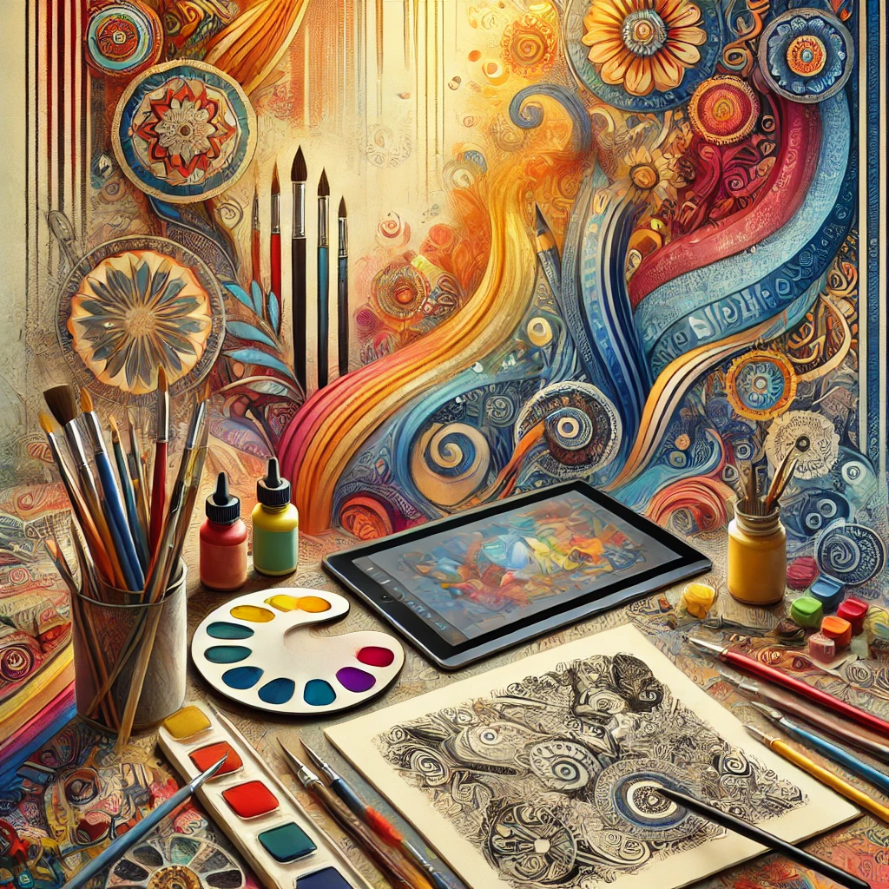

My Art Journey
Growing up, I was always fascinated by how art could capture a moment, emotion, or idea in a way words often couldn’t. My journey into art started with simple sketches and evolved into a multi-faceted passion that spans traditional and digital media, deeply influenced by my exposure to diverse cultures.
The Early Days: Drawing Inspiration from My Surroundings
As a child, I spent time in various places, from Saudi Arabia to India, each with its unique artistic traditions. I remember the vibrant colors of Saudi murals and the intricate patterns in Indian textiles. These experiences laid the foundation for my early work, which was centered around portrait sketches and experimenting with acrylics.
I began sharing my art online under the Instagram handle @artxar_, where I explored the boundaries of my creativity. I started with traditional art forms—portraits, landscapes, and abstract pieces—but as time passed, I ventured into digital painting and illustration, blending modern techniques with classic influences.
Bridging Art and Technology
As I grew older, my academic pursuits in Computer Science and Artificial Intelligence opened my eyes to the possibilities of merging art with technology. It’s amazing how these seemingly different fields can complement each other. The precision and logic needed for coding have influenced my approach to art, making it more structured, while my creative background has enabled me to think outside the box in my technical projects.
I enjoy experimenting with various software like Adobe Photoshop, and this digital exploration has allowed me to bring to life more complex and imaginative ideas. The digital space has become a playground where I combine my love for color, design, and storytelling.
Art as an Expression of Culture and Identity
One of the most rewarding aspects of my art journey has been using my work to express cultural identity and personal growth. I’ve participated in several art-related events, such as contributing to spray-paint murals in Jeddah. These experiences taught me the importance of collaboration and community in art—how every piece tells a story not just of the artist, but of the people and places that influence it.
The Present: Engaging with a Global Audience
Today, my work on Instagram connects me with a global audience, each piece resonating with people from all walks of life. It’s an incredible feeling to see how my art, something deeply personal, can touch others and start conversations.
My art journey is ongoing, and I’m excited to continue exploring new mediums, ideas, and collaborations. Whether it’s through traditional painting or digital illustration, art remains my true north, a way for me to express who I am and where I’ve been.
Stay tuned for more on my Instagram page, where I’ll continue sharing my creative adventures, one piece at a time.